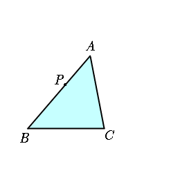

| P is a point on the side AB of a triangle ABC. Find the point Q on BC such that PQ divides the triangle into two equal areas. |  |
|
M is the midpoint of BC. The area of the triangle ABM is half of the area ABC.
Find Q on BC so that ABM=PBQ.
Drag the red point. |
|
Find the point R on the line BC so that ABC=PBR.
Q is the midpoint of BR.
Drag the red point. |